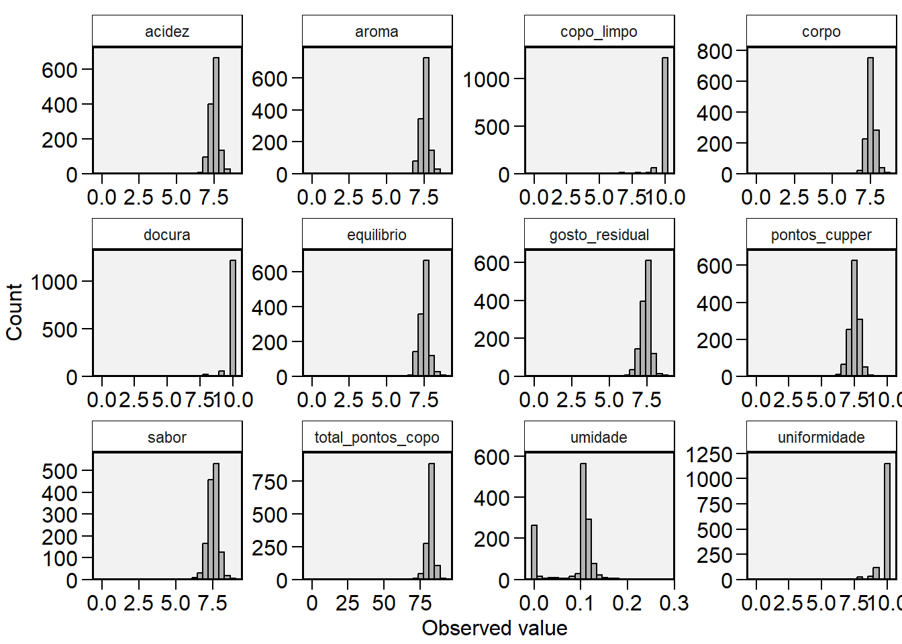
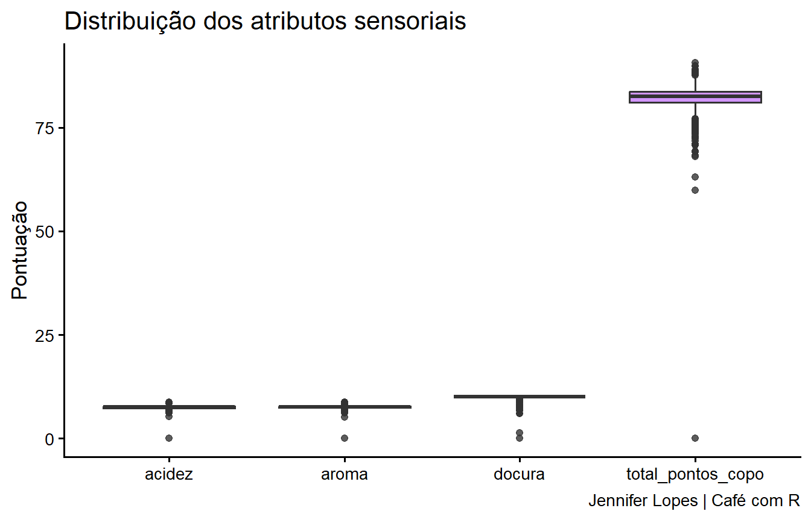

library(pacman)
pacman::p_load(
tidyverse, # conjunto de pacotes para manipular, visualizar e importar dados
dplyr, # filtrar, selecionar, criar e resumir colunas
tidyr, # transformar entre formato longo e largo
metan, # estatísticas descritivas detalhadas
DT) # tabelas interativas em HTMLImportação e Manipulação de Dados no R
Um guia passo a passo com o dataset coffee_ratings
R
tidyverse
dplyr
tidyr
Manipulação de Dados
Tutorial
Aprenda a importar, inspecionar, renomear, filtrar, transformar, resumir, unir e pivotar dados no R usando o tidyverse. Tutorial completo com exemplos reais de avaliação de cafés.
Sobre este tutorial
Este tutorial cobre o fluxo completo de trabalho com dados no R: importar, inspecionar, selecionar, filtrar, transformar, resumir, unir tabelas e pivotar. Vamos usar o dataset coffee_ratings, com avaliações sensoriais de cafés de 36 países coletadas pelo Coffee Quality Institute.
Cada seção explica o que a função faz, quando usar e o que esperar como resultado.
1. Carregando os pacotes
Antes de trabalhar com dados, precisamos carregar os pacotes que oferecem as funções que vamos usar.
Usamos o pacman::p_load() para carregar e instalar os pacotes de uma só vez. Se um pacote ainda não estiver instalado, ele instala automaticamente. É mais prático do que chamar library() para cada um.
O que cada pacote faz:
tidyverse: carrega automaticamentedplyr,ggplot2,readr,tidyr,stringre outros. É o ponto de entrada do ecossistema.dplyr: manipulação de dados com verbos claros:filter(),select(),mutate(),summarise().tidyr: reorganização de dados entre formatos largo e longo compivot_longer()epivot_wider().metan: estatísticas descritivas detalhadas com uma única função.DT: exibedata.framescomo tabelas interativas no HTML, com filtros e botões de exportação.
2. O pipe |>
Antes de importar os dados, vale entender o pipe, porque ele aparece em praticamente todo o código que vamos escrever.
O pipe |> pega o resultado do que está à esquerda e passa como primeiro argumento para a função da direita. Ele existe para tornar o código mais legível, eliminando a necessidade de criar objetos intermediários.
Sem pipe:
x <- c(1, 2, 3, 4)
sqrt(sum(x))[1] 3.162278O R precisa ler de dentro para fora: primeiro c(), depois sum(), depois sqrt(). Conforme o número de funções aumenta, a leitura fica difícil.
Com pipe:
x |>
sum() |>
sqrt()[1] 3.162278Agora lemos da esquerda para a direita, na ordem em que as operações acontecem: pega x, soma tudo, tira a raiz quadrada. O resultado é o mesmo.
Tip
Atalho no RStudio: Ctrl + Shift + M insere o pipe automaticamente. Verifique em Tools > Global Options > Code se a opção “Use native pipe operator” está marcada para usar |> em vez de %>%.
3. Importando os dados
O dataset coffee_ratings está disponível publicamente no repositório do TidyTuesday no GitHub. Vamos importar direto da URL usando read_csv() do pacote readr.
Por que read_csv() e não read.csv()?
A função read_csv() do readr é mais rápida, lê os tipos de coluna de forma mais inteligente, não converte texto em fator automaticamente e retorna um tibble em vez de um data.frame. Para a maioria dos casos, é a escolha certa.
coffee <- readr::read_csv(
"https://raw.githubusercontent.com/rfordatascience/tidytuesday/refs/heads/main/data/2020/2020-07-07/coffee_ratings.csv")A mensagem que aparece no console informa quantas linhas e colunas foram lidas, e qual tipo foi atribuído a cada coluna. Isso é normal e esperado.
4. Inspecionando os dados
Após importar, o primeiro passo é entender o que temos: quantas linhas, quantas colunas, quais os tipos de variáveis e como os dados se parecem.
4.1 Primeiras linhas com slice_head()
coffee |>
slice_head(n = 5)# A tibble: 5 × 43
total_cup_points species owner country_of_origin farm_name lot_number mill
<dbl> <chr> <chr> <chr> <chr> <chr> <chr>
1 90.6 Arabica metad p… Ethiopia "metad p… <NA> meta…
2 89.9 Arabica metad p… Ethiopia "metad p… <NA> meta…
3 89.8 Arabica grounds… Guatemala "san mar… <NA> <NA>
4 89 Arabica yidneka… Ethiopia "yidneka… <NA> wole…
5 88.8 Arabica metad p… Ethiopia "metad p… <NA> meta…
# ℹ 36 more variables: ico_number <chr>, company <chr>, altitude <chr>,
# region <chr>, producer <chr>, number_of_bags <dbl>, bag_weight <chr>,
# in_country_partner <chr>, harvest_year <chr>, grading_date <chr>,
# owner_1 <chr>, variety <chr>, processing_method <chr>, aroma <dbl>,
# flavor <dbl>, aftertaste <dbl>, acidity <dbl>, body <dbl>, balance <dbl>,
# uniformity <dbl>, clean_cup <dbl>, sweetness <dbl>, cupper_points <dbl>,
# moisture <dbl>, category_one_defects <dbl>, quakers <dbl>, color <chr>, …slice_head(n = 5) retorna as 5 primeiras linhas. É a alternativa tidyverse ao head(). Use quando quiser dar uma olhada rápida no início do dataset.
4.2 Nomes das colunas com names()
names(coffee) [1] "total_cup_points" "species" "owner"
[4] "country_of_origin" "farm_name" "lot_number"
[7] "mill" "ico_number" "company"
[10] "altitude" "region" "producer"
[13] "number_of_bags" "bag_weight" "in_country_partner"
[16] "harvest_year" "grading_date" "owner_1"
[19] "variety" "processing_method" "aroma"
[22] "flavor" "aftertaste" "acidity"
[25] "body" "balance" "uniformity"
[28] "clean_cup" "sweetness" "cupper_points"
[31] "moisture" "category_one_defects" "quakers"
[34] "color" "category_two_defects" "expiration"
[37] "certification_body" "certification_address" "certification_contact"
[40] "unit_of_measurement" "altitude_low_meters" "altitude_high_meters"
[43] "altitude_mean_meters" names() retorna um vetor com os nomes de todas as colunas. Útil para saber o que está disponível antes de selecionar ou renomear.
4.3 Estrutura completa com glimpse()
dplyr::glimpse(coffee)Rows: 1,339
Columns: 43
$ total_cup_points <dbl> 90.58, 89.92, 89.75, 89.00, 88.83, 88.83, 88.75,…
$ species <chr> "Arabica", "Arabica", "Arabica", "Arabica", "Ara…
$ owner <chr> "metad plc", "metad plc", "grounds for health ad…
$ country_of_origin <chr> "Ethiopia", "Ethiopia", "Guatemala", "Ethiopia",…
$ farm_name <chr> "metad plc", "metad plc", "san marcos barrancas …
$ lot_number <chr> NA, NA, NA, NA, NA, NA, NA, NA, NA, NA, NA, NA, …
$ mill <chr> "metad plc", "metad plc", NA, "wolensu", "metad …
$ ico_number <chr> "2014/2015", "2014/2015", NA, NA, "2014/2015", N…
$ company <chr> "metad agricultural developmet plc", "metad agri…
$ altitude <chr> "1950-2200", "1950-2200", "1600 - 1800 m", "1800…
$ region <chr> "guji-hambela", "guji-hambela", NA, "oromia", "g…
$ producer <chr> "METAD PLC", "METAD PLC", NA, "Yidnekachew Dabes…
$ number_of_bags <dbl> 300, 300, 5, 320, 300, 100, 100, 300, 300, 50, 3…
$ bag_weight <chr> "60 kg", "60 kg", "1", "60 kg", "60 kg", "30 kg"…
$ in_country_partner <chr> "METAD Agricultural Development plc", "METAD Agr…
$ harvest_year <chr> "2014", "2014", NA, "2014", "2014", "2013", "201…
$ grading_date <chr> "April 4th, 2015", "April 4th, 2015", "May 31st,…
$ owner_1 <chr> "metad plc", "metad plc", "Grounds for Health Ad…
$ variety <chr> NA, "Other", "Bourbon", NA, "Other", NA, "Other"…
$ processing_method <chr> "Washed / Wet", "Washed / Wet", NA, "Natural / D…
$ aroma <dbl> 8.67, 8.75, 8.42, 8.17, 8.25, 8.58, 8.42, 8.25, …
$ flavor <dbl> 8.83, 8.67, 8.50, 8.58, 8.50, 8.42, 8.50, 8.33, …
$ aftertaste <dbl> 8.67, 8.50, 8.42, 8.42, 8.25, 8.42, 8.33, 8.50, …
$ acidity <dbl> 8.75, 8.58, 8.42, 8.42, 8.50, 8.50, 8.50, 8.42, …
$ body <dbl> 8.50, 8.42, 8.33, 8.50, 8.42, 8.25, 8.25, 8.33, …
$ balance <dbl> 8.42, 8.42, 8.42, 8.25, 8.33, 8.33, 8.25, 8.50, …
$ uniformity <dbl> 10.00, 10.00, 10.00, 10.00, 10.00, 10.00, 10.00,…
$ clean_cup <dbl> 10, 10, 10, 10, 10, 10, 10, 10, 10, 10, 10, 10, …
$ sweetness <dbl> 10.00, 10.00, 10.00, 10.00, 10.00, 10.00, 10.00,…
$ cupper_points <dbl> 8.75, 8.58, 9.25, 8.67, 8.58, 8.33, 8.50, 9.00, …
$ moisture <dbl> 0.12, 0.12, 0.00, 0.11, 0.12, 0.11, 0.11, 0.03, …
$ category_one_defects <dbl> 0, 0, 0, 0, 0, 0, 0, 0, 0, 0, 0, 0, 0, 0, 0, 0, …
$ quakers <dbl> 0, 0, 0, 0, 0, 0, 0, 0, 0, 0, 0, 0, 0, 0, 0, 0, …
$ color <chr> "Green", "Green", NA, "Green", "Green", "Bluish-…
$ category_two_defects <dbl> 0, 1, 0, 2, 2, 1, 0, 0, 0, 4, 1, 0, 0, 2, 2, 0, …
$ expiration <chr> "April 3rd, 2016", "April 3rd, 2016", "May 31st,…
$ certification_body <chr> "METAD Agricultural Development plc", "METAD Agr…
$ certification_address <chr> "309fcf77415a3661ae83e027f7e5f05dad786e44", "309…
$ certification_contact <chr> "19fef5a731de2db57d16da10287413f5f99bc2dd", "19f…
$ unit_of_measurement <chr> "m", "m", "m", "m", "m", "m", "m", "m", "m", "m"…
$ altitude_low_meters <dbl> 1950.0, 1950.0, 1600.0, 1800.0, 1950.0, NA, NA, …
$ altitude_high_meters <dbl> 2200.0, 2200.0, 1800.0, 2200.0, 2200.0, NA, NA, …
$ altitude_mean_meters <dbl> 2075.0, 2075.0, 1700.0, 2000.0, 2075.0, NA, NA, …glimpse() é a função mais informativa para inspeção inicial. Ela mostra em uma única tela o número de linhas e colunas, o nome, o tipo e os primeiros valores de cada variável.
Quando usar cada função de inspeção:
| Função | O que mostra | Quando usar |
|---|---|---|
slice_head(n = 5) |
Primeiras linhas em formato de tabela | Ver os dados como eles são |
names() |
Nomes das colunas | Consultar variáveis disponíveis |
glimpse() |
Tipos e primeiros valores de todas as colunas | Visão geral completa da estrutura |
5. Renomeando colunas com rename()
Os nomes originais do dataset estão em inglês. Vamos traduzir para português para facilitar o trabalho.
rename() segue a sintaxe novo_nome = nome_antigo.
dados <- coffee |>
rename(
total_pontos_copo = total_cup_points,
especie = species,
proprietario = owner,
pais_origem = country_of_origin,
nome_fazenda = farm_name,
numero_lote = lot_number,
moinho = mill,
numero_ico = ico_number,
empresa = company,
altitude = altitude,
regiao = region,
produtor = producer,
numero_sacos = number_of_bags,
peso_saco = bag_weight,
parceiro_pais = in_country_partner,
ano_colheita = harvest_year,
data_classificacao = grading_date,
proprietario_1 = owner_1,
variedade = variety,
metodo_processamento = processing_method,
aroma = aroma,
sabor = flavor,
gosto_residual = aftertaste,
acidez = acidity,
corpo = body,
equilibrio = balance,
uniformidade = uniformity,
copo_limpo = clean_cup,
docura = sweetness,
pontos_cupper = cupper_points,
umidade = moisture,
defeitos_cat1 = category_one_defects,
quakers = quakers,
cor = color,
defeitos_cat2 = category_two_defects,
expiracao = expiration,
org_certificador = certification_body,
endereco_certificacao = certification_address,
contato_certificacao = certification_contact,
unidade_medida = unit_of_measurement,
altitude_baixa_m = altitude_low_meters,
altitude_alta_m = altitude_high_meters,
altitude_media_m = altitude_mean_meters)
glimpse(dados)Rows: 1,339
Columns: 43
$ total_pontos_copo <dbl> 90.58, 89.92, 89.75, 89.00, 88.83, 88.83, 88.75,…
$ especie <chr> "Arabica", "Arabica", "Arabica", "Arabica", "Ara…
$ proprietario <chr> "metad plc", "metad plc", "grounds for health ad…
$ pais_origem <chr> "Ethiopia", "Ethiopia", "Guatemala", "Ethiopia",…
$ nome_fazenda <chr> "metad plc", "metad plc", "san marcos barrancas …
$ numero_lote <chr> NA, NA, NA, NA, NA, NA, NA, NA, NA, NA, NA, NA, …
$ moinho <chr> "metad plc", "metad plc", NA, "wolensu", "metad …
$ numero_ico <chr> "2014/2015", "2014/2015", NA, NA, "2014/2015", N…
$ empresa <chr> "metad agricultural developmet plc", "metad agri…
$ altitude <chr> "1950-2200", "1950-2200", "1600 - 1800 m", "1800…
$ regiao <chr> "guji-hambela", "guji-hambela", NA, "oromia", "g…
$ produtor <chr> "METAD PLC", "METAD PLC", NA, "Yidnekachew Dabes…
$ numero_sacos <dbl> 300, 300, 5, 320, 300, 100, 100, 300, 300, 50, 3…
$ peso_saco <chr> "60 kg", "60 kg", "1", "60 kg", "60 kg", "30 kg"…
$ parceiro_pais <chr> "METAD Agricultural Development plc", "METAD Agr…
$ ano_colheita <chr> "2014", "2014", NA, "2014", "2014", "2013", "201…
$ data_classificacao <chr> "April 4th, 2015", "April 4th, 2015", "May 31st,…
$ proprietario_1 <chr> "metad plc", "metad plc", "Grounds for Health Ad…
$ variedade <chr> NA, "Other", "Bourbon", NA, "Other", NA, "Other"…
$ metodo_processamento <chr> "Washed / Wet", "Washed / Wet", NA, "Natural / D…
$ aroma <dbl> 8.67, 8.75, 8.42, 8.17, 8.25, 8.58, 8.42, 8.25, …
$ sabor <dbl> 8.83, 8.67, 8.50, 8.58, 8.50, 8.42, 8.50, 8.33, …
$ gosto_residual <dbl> 8.67, 8.50, 8.42, 8.42, 8.25, 8.42, 8.33, 8.50, …
$ acidez <dbl> 8.75, 8.58, 8.42, 8.42, 8.50, 8.50, 8.50, 8.42, …
$ corpo <dbl> 8.50, 8.42, 8.33, 8.50, 8.42, 8.25, 8.25, 8.33, …
$ equilibrio <dbl> 8.42, 8.42, 8.42, 8.25, 8.33, 8.33, 8.25, 8.50, …
$ uniformidade <dbl> 10.00, 10.00, 10.00, 10.00, 10.00, 10.00, 10.00,…
$ copo_limpo <dbl> 10, 10, 10, 10, 10, 10, 10, 10, 10, 10, 10, 10, …
$ docura <dbl> 10.00, 10.00, 10.00, 10.00, 10.00, 10.00, 10.00,…
$ pontos_cupper <dbl> 8.75, 8.58, 9.25, 8.67, 8.58, 8.33, 8.50, 9.00, …
$ umidade <dbl> 0.12, 0.12, 0.00, 0.11, 0.12, 0.11, 0.11, 0.03, …
$ defeitos_cat1 <dbl> 0, 0, 0, 0, 0, 0, 0, 0, 0, 0, 0, 0, 0, 0, 0, 0, …
$ quakers <dbl> 0, 0, 0, 0, 0, 0, 0, 0, 0, 0, 0, 0, 0, 0, 0, 0, …
$ cor <chr> "Green", "Green", NA, "Green", "Green", "Bluish-…
$ defeitos_cat2 <dbl> 0, 1, 0, 2, 2, 1, 0, 0, 0, 4, 1, 0, 0, 2, 2, 0, …
$ expiracao <chr> "April 3rd, 2016", "April 3rd, 2016", "May 31st,…
$ org_certificador <chr> "METAD Agricultural Development plc", "METAD Agr…
$ endereco_certificacao <chr> "309fcf77415a3661ae83e027f7e5f05dad786e44", "309…
$ contato_certificacao <chr> "19fef5a731de2db57d16da10287413f5f99bc2dd", "19f…
$ unidade_medida <chr> "m", "m", "m", "m", "m", "m", "m", "m", "m", "m"…
$ altitude_baixa_m <dbl> 1950.0, 1950.0, 1600.0, 1800.0, 1950.0, NA, NA, …
$ altitude_alta_m <dbl> 2200.0, 2200.0, 1800.0, 2200.0, 2200.0, NA, NA, …
$ altitude_media_m <dbl> 2075.0, 2075.0, 1700.0, 2000.0, 2075.0, NA, NA, …O objeto dados agora contém o dataset com todos os nomes em português. O original coffee continua disponível se precisarmos comparar.
Tip
Use rename() quando quiser renomear colunas específicas. Se quiser renomear todas seguindo uma regra, como converter para minúsculo ou remover espaços, o janitor::clean_names() faz isso automaticamente.
6. Selecionando colunas com select()
select() escolhe quais colunas manter, remover ou reordenar. É a função certa quando o dataset tem muitas variáveis e você quer trabalhar apenas com um subconjunto.
6.1 Selecionar pelo nome
dados |>
dplyr::select(especie, total_pontos_copo, pais_origem) |>
slice_head(n = 8)# A tibble: 8 × 3
especie total_pontos_copo pais_origem
<chr> <dbl> <chr>
1 Arabica 90.6 Ethiopia
2 Arabica 89.9 Ethiopia
3 Arabica 89.8 Guatemala
4 Arabica 89 Ethiopia
5 Arabica 88.8 Ethiopia
6 Arabica 88.8 Brazil
7 Arabica 88.8 Peru
8 Arabica 88.7 Ethiopia Apenas as três colunas informadas aparecem no resultado. A ordem no select() define a ordem das colunas no output.
6.2 Salvar a seleção em um novo objeto
exemplo <- dados |>
dplyr::select(total_pontos_copo, especie, proprietario,
pais_origem, nome_fazenda)
glimpse(exemplo)Rows: 1,339
Columns: 5
$ total_pontos_copo <dbl> 90.58, 89.92, 89.75, 89.00, 88.83, 88.83, 88.75, 88.…
$ especie <chr> "Arabica", "Arabica", "Arabica", "Arabica", "Arabica…
$ proprietario <chr> "metad plc", "metad plc", "grounds for health admin"…
$ pais_origem <chr> "Ethiopia", "Ethiopia", "Guatemala", "Ethiopia", "Et…
$ nome_fazenda <chr> "metad plc", "metad plc", "san marcos barrancas \"sa…Quando quiser trabalhar com um subconjunto de colunas durante toda a análise, salve em um novo objeto. Isso não modifica dados.
6.3 Excluir colunas com -
dados |>
dplyr::select(-proprietario) |>
slice_head(n = 3)# A tibble: 3 × 42
total_pontos_copo especie pais_origem nome_fazenda numero_lote moinho
<dbl> <chr> <chr> <chr> <chr> <chr>
1 90.6 Arabica Ethiopia "metad plc" <NA> metad…
2 89.9 Arabica Ethiopia "metad plc" <NA> metad…
3 89.8 Arabica Guatemala "san marcos barranca… <NA> <NA>
# ℹ 36 more variables: numero_ico <chr>, empresa <chr>, altitude <chr>,
# regiao <chr>, produtor <chr>, numero_sacos <dbl>, peso_saco <chr>,
# parceiro_pais <chr>, ano_colheita <chr>, data_classificacao <chr>,
# proprietario_1 <chr>, variedade <chr>, metodo_processamento <chr>,
# aroma <dbl>, sabor <dbl>, gosto_residual <dbl>, acidez <dbl>, corpo <dbl>,
# equilibrio <dbl>, uniformidade <dbl>, copo_limpo <dbl>, docura <dbl>,
# pontos_cupper <dbl>, umidade <dbl>, defeitos_cat1 <dbl>, quakers <dbl>, …O sinal - antes do nome exclui a coluna. Útil quando o dataset tem muitas colunas e você quer remover apenas uma ou duas.
6.4 Selecionar intervalo de colunas com :
dados |>
dplyr::select(total_pontos_copo:pais_origem) |>
slice_head(n = 5)# A tibble: 5 × 4
total_pontos_copo especie proprietario pais_origem
<dbl> <chr> <chr> <chr>
1 90.6 Arabica metad plc Ethiopia
2 89.9 Arabica metad plc Ethiopia
3 89.8 Arabica grounds for health admin Guatemala
4 89 Arabica yidnekachew dabessa Ethiopia
5 88.8 Arabica metad plc Ethiopia O : seleciona todas as colunas desde a primeira até a última informada, na ordem em que aparecem no dataset. Funciona como um intervalo de posições, mas usando nomes.
6.5 Selecionar por padrão de texto com starts_with() e ends_with()
dados |>
dplyr::select(starts_with("d")) |>
slice_head(n = 5)# A tibble: 5 × 4
data_classificacao docura defeitos_cat1 defeitos_cat2
<chr> <dbl> <dbl> <dbl>
1 April 4th, 2015 10 0 0
2 April 4th, 2015 10 0 1
3 May 31st, 2010 10 0 0
4 March 26th, 2015 10 0 2
5 April 4th, 2015 10 0 2dados |>
dplyr::select(ends_with("a")) |>
slice_head(n = 5)# A tibble: 5 × 6
nome_fazenda empresa ano_colheita aroma docura unidade_medida
<chr> <chr> <chr> <dbl> <dbl> <chr>
1 "metad plc" metad … 2014 8.67 10 m
2 "metad plc" metad … 2014 8.75 10 m
3 "san marcos barrancas \"san … <NA> <NA> 8.42 10 m
4 "yidnekachew dabessa coffee … yidnek… 2014 8.17 10 m
5 "metad plc" metad … 2014 8.25 10 m starts_with() e ends_with() são funções auxiliares do tidyselect que selecionam colunas cujos nomes começam ou terminam com um padrão de texto. Muito úteis quando as colunas seguem uma convenção de nomenclatura.
Resumo das formas de usar select():
| Sintaxe | O que faz |
|---|---|
select(col1, col2) |
Seleciona as colunas pelo nome |
select(-col1) |
Remove a coluna |
select(col1:col5) |
Seleciona intervalo entre col1 e col5 |
select(starts_with("x")) |
Seleciona colunas que começam com “x” |
select(ends_with("a")) |
Seleciona colunas que terminam com “a” |
select(contains("_")) |
Seleciona colunas que contêm “_” |
7. Filtrando linhas com filter()
filter() mantém apenas as linhas que satisfazem uma condição. As demais são descartadas do resultado.
7.1 Operadores de comparação
Antes dos exemplos, os operadores disponíveis:
| Operador | Significado |
|---|---|
== |
Igual a |
!= |
Diferente de |
> |
Maior que |
>= |
Maior ou igual a |
< |
Menor que |
<= |
Menor ou igual a |
7.2 Filtro simples
dados |>
dplyr::select(especie, total_pontos_copo, pais_origem) |>
dplyr::filter(especie == "Arabica") |>
slice_head(n = 8)# A tibble: 8 × 3
especie total_pontos_copo pais_origem
<chr> <dbl> <chr>
1 Arabica 90.6 Ethiopia
2 Arabica 89.9 Ethiopia
3 Arabica 89.8 Guatemala
4 Arabica 89 Ethiopia
5 Arabica 88.8 Ethiopia
6 Arabica 88.8 Brazil
7 Arabica 88.8 Peru
8 Arabica 88.7 Ethiopia O resultado contém apenas cafés da espécie Arabica. == compara igualdade. Note que para texto é preciso usar aspas.
7.3 Filtro com negação
dados |>
dplyr::select(especie, total_pontos_copo, pais_origem) |>
dplyr::filter(especie != "Arabica") |>
slice_head(n = 8)# A tibble: 8 × 3
especie total_pontos_copo pais_origem
<chr> <dbl> <chr>
1 Robusta 83.8 Uganda
2 Robusta 83.5 India
3 Robusta 83.2 India
4 Robusta 83 Uganda
5 Robusta 83 Uganda
6 Robusta 82.8 India
7 Robusta 82.6 India
8 Robusta 82.5 India != retorna tudo que não é Arabica. No dataset, isso corresponde aos cafés Robusta.
7.4 Múltiplas condições com | e &
dados |>
dplyr::select(especie, total_pontos_copo, pais_origem) |>
dplyr::filter(especie == "Arabica" |
total_pontos_copo > 60.0 |
pais_origem == "Ethiopia") |>
slice_head(n = 10)# A tibble: 10 × 3
especie total_pontos_copo pais_origem
<chr> <dbl> <chr>
1 Arabica 90.6 Ethiopia
2 Arabica 89.9 Ethiopia
3 Arabica 89.8 Guatemala
4 Arabica 89 Ethiopia
5 Arabica 88.8 Ethiopia
6 Arabica 88.8 Brazil
7 Arabica 88.8 Peru
8 Arabica 88.7 Ethiopia
9 Arabica 88.4 Ethiopia
10 Arabica 88.2 Ethiopia |significa OU: a linha é mantida se pelo menos uma condição for verdadeira.&significa E: a linha é mantida apenas se todas as condições forem verdadeiras.
Tip
Use filter(variavel %in% c("A", "B", "C")) quando quiser filtrar por vários valores de uma mesma coluna. É mais legível do que encadear vários |.
8. Selecionando linhas com slice()
Enquanto filter() seleciona linhas por condição, slice() seleciona por posição. É útil quando você quer pegar as primeiras, últimas ou posições específicas.
8.1 Por posição
dados |>
dplyr::slice(1:5)# A tibble: 5 × 43
total_pontos_copo especie proprietario pais_origem nome_fazenda numero_lote
<dbl> <chr> <chr> <chr> <chr> <chr>
1 90.6 Arabica metad plc Ethiopia "metad plc" <NA>
2 89.9 Arabica metad plc Ethiopia "metad plc" <NA>
3 89.8 Arabica grounds for he… Guatemala "san marcos… <NA>
4 89 Arabica yidnekachew da… Ethiopia "yidnekache… <NA>
5 88.8 Arabica metad plc Ethiopia "metad plc" <NA>
# ℹ 37 more variables: moinho <chr>, numero_ico <chr>, empresa <chr>,
# altitude <chr>, regiao <chr>, produtor <chr>, numero_sacos <dbl>,
# peso_saco <chr>, parceiro_pais <chr>, ano_colheita <chr>,
# data_classificacao <chr>, proprietario_1 <chr>, variedade <chr>,
# metodo_processamento <chr>, aroma <dbl>, sabor <dbl>, gosto_residual <dbl>,
# acidez <dbl>, corpo <dbl>, equilibrio <dbl>, uniformidade <dbl>,
# copo_limpo <dbl>, docura <dbl>, pontos_cupper <dbl>, umidade <dbl>, …Seleciona as linhas de 1 a 5. O : cria uma sequência de posições inteiras.
8.2 Excluindo posições
dados2 <- dados |>
dplyr::slice(-(1:5))
nrow(dados2)[1] 1334O - antes do intervalo exclui aquelas linhas. Aqui removemos as 5 primeiras.
8.3 Posições específicas
dados |>
dplyr::slice(c(10, 20, 30))# A tibble: 3 × 43
total_pontos_copo especie proprietario pais_origem nome_fazenda numero_lote
<dbl> <chr> <chr> <chr> <chr> <chr>
1 88.2 Arabica diamond enterp… Ethiopia tulla coffe… <NA>
2 87.2 Arabica essencecoffee Ethiopia drima zede <NA>
3 86.6 Arabica lin, che-hao k… Taiwan tsoustructi… Tsoustruct…
# ℹ 37 more variables: moinho <chr>, numero_ico <chr>, empresa <chr>,
# altitude <chr>, regiao <chr>, produtor <chr>, numero_sacos <dbl>,
# peso_saco <chr>, parceiro_pais <chr>, ano_colheita <chr>,
# data_classificacao <chr>, proprietario_1 <chr>, variedade <chr>,
# metodo_processamento <chr>, aroma <dbl>, sabor <dbl>, gosto_residual <dbl>,
# acidez <dbl>, corpo <dbl>, equilibrio <dbl>, uniformidade <dbl>,
# copo_limpo <dbl>, docura <dbl>, pontos_cupper <dbl>, umidade <dbl>, …Passando um vetor com c(), selecionamos posições exatas.
8.4 slice_head() e slice_tail()
dados |>
slice_head(n = 5)# A tibble: 5 × 43
total_pontos_copo especie proprietario pais_origem nome_fazenda numero_lote
<dbl> <chr> <chr> <chr> <chr> <chr>
1 90.6 Arabica metad plc Ethiopia "metad plc" <NA>
2 89.9 Arabica metad plc Ethiopia "metad plc" <NA>
3 89.8 Arabica grounds for he… Guatemala "san marcos… <NA>
4 89 Arabica yidnekachew da… Ethiopia "yidnekache… <NA>
5 88.8 Arabica metad plc Ethiopia "metad plc" <NA>
# ℹ 37 more variables: moinho <chr>, numero_ico <chr>, empresa <chr>,
# altitude <chr>, regiao <chr>, produtor <chr>, numero_sacos <dbl>,
# peso_saco <chr>, parceiro_pais <chr>, ano_colheita <chr>,
# data_classificacao <chr>, proprietario_1 <chr>, variedade <chr>,
# metodo_processamento <chr>, aroma <dbl>, sabor <dbl>, gosto_residual <dbl>,
# acidez <dbl>, corpo <dbl>, equilibrio <dbl>, uniformidade <dbl>,
# copo_limpo <dbl>, docura <dbl>, pontos_cupper <dbl>, umidade <dbl>, …dados |>
slice_tail(n = 5)# A tibble: 5 × 43
total_pontos_copo especie proprietario pais_origem nome_fazenda numero_lote
<dbl> <chr> <chr> <chr> <chr> <chr>
1 78.8 Robusta luis robles Ecuador robustasa Lavado 1
2 78.1 Robusta luis robles Ecuador robustasa Lavado 3
3 77.2 Robusta james moore United States fazenda caz… <NA>
4 75.1 Robusta cafe politico India <NA> <NA>
5 73.8 Robusta cafe politico Vietnam <NA> <NA>
# ℹ 37 more variables: moinho <chr>, numero_ico <chr>, empresa <chr>,
# altitude <chr>, regiao <chr>, produtor <chr>, numero_sacos <dbl>,
# peso_saco <chr>, parceiro_pais <chr>, ano_colheita <chr>,
# data_classificacao <chr>, proprietario_1 <chr>, variedade <chr>,
# metodo_processamento <chr>, aroma <dbl>, sabor <dbl>, gosto_residual <dbl>,
# acidez <dbl>, corpo <dbl>, equilibrio <dbl>, uniformidade <dbl>,
# copo_limpo <dbl>, docura <dbl>, pontos_cupper <dbl>, umidade <dbl>, …slice_head() e slice_tail() são alternativas mais expressivas ao slice(1:n). Deixam claro que você quer o início ou o fim da tabela.
8.5 Combinando arrange() com slice()
arrange() ordena as linhas. Combinado com slice(), permite selecionar os maiores ou menores valores.
dados |>
dplyr::arrange(desc(total_pontos_copo)) |>
dplyr::slice(1:5) |>
dplyr::select(pais_origem, especie, total_pontos_copo)# A tibble: 5 × 3
pais_origem especie total_pontos_copo
<chr> <chr> <dbl>
1 Ethiopia Arabica 90.6
2 Ethiopia Arabica 89.9
3 Guatemala Arabica 89.8
4 Ethiopia Arabica 89
5 Ethiopia Arabica 88.8Aqui ordenamos de forma decrescente pela pontuação e pegamos os 5 primeiros. Resultado: os 5 cafés mais bem avaliados do dataset.
9. Contando com count()
count() conta quantas vezes cada combinação de valores aparece no dataset. É o atalho para group_by() + summarise(n = n()).
dados |>
dplyr::count(especie, cor) |>
arrange(desc(n))# A tibble: 10 × 3
especie cor n
<chr> <chr> <int>
1 Arabica Green 850
2 Arabica <NA> 216
3 Arabica Bluish-Green 112
4 Arabica Blue-Green 82
5 Arabica None 51
6 Robusta Green 20
7 Robusta Blue-Green 3
8 Robusta Bluish-Green 2
9 Robusta <NA> 2
10 Robusta None 1O resultado mostra quantos cafés existem para cada combinação de espécie e cor. Muito útil para explorar variáveis categóricas rapidamente.
10. Criando e transformando colunas com mutate()
mutate() adiciona novas colunas ou modifica colunas existentes sem remover as demais. É a função central para criar variáveis derivadas.
10.1 Criando um ID único
dados <- dados |>
dplyr::mutate(
id_cafe = row_number(),
.before = total_pontos_copo)
dados |>
dplyr::select(id_cafe, especie, total_pontos_copo) |>
slice_head(n = 5)# A tibble: 5 × 3
id_cafe especie total_pontos_copo
<int> <chr> <dbl>
1 1 Arabica 90.6
2 2 Arabica 89.9
3 3 Arabica 89.8
4 4 Arabica 89
5 5 Arabica 88.8row_number() cria um número sequencial para cada linha. O argumento .before = total_pontos_copo posiciona a nova coluna antes da coluna indicada.
10.2 Coluna derivada de cálculo
dados |>
dplyr::mutate(
total_pontos_perc = total_pontos_copo * 100,
.after = total_pontos_copo) |>
dplyr::select(id_cafe, total_pontos_copo, total_pontos_perc) |>
slice_head(n = 5)# A tibble: 5 × 3
id_cafe total_pontos_copo total_pontos_perc
<int> <dbl> <dbl>
1 1 90.6 9058
2 2 89.9 8992
3 3 89.8 8975
4 4 89 8900
5 5 88.8 8883.after = total_pontos_copo posiciona a nova coluna logo depois da coluna de referência. Assim o resultado fica visualmente organizado.
10.3 Arredondando valores
dados |>
dplyr::mutate(
total_pontos_copo = round(total_pontos_copo, digits = 1)) |>
dplyr::select(id_cafe, total_pontos_copo) |>
slice_head(n = 5)# A tibble: 5 × 2
id_cafe total_pontos_copo
<int> <dbl>
1 1 90.6
2 2 89.9
3 3 89.8
4 4 89
5 5 88.8round() dentro do mutate() arredonda a coluna existente. Aqui modificamos a própria coluna em vez de criar uma nova.
10.4 Classificando com case_when()
case_when() é o equivalente tidyverse a um conjunto de if/else. Ele avalia condições em ordem e atribui o valor correspondente à primeira condição verdadeira.
dados_mod1 <- dados |>
dplyr::mutate(
classificacao = case_when(
total_pontos_copo >= 90 ~ "Excelente",
total_pontos_copo >= 80 ~ "Muito bom",
total_pontos_copo >= 70 ~ "Bom",
total_pontos_copo >= 50 ~ "Dúvida",
TRUE ~ "Regular"))
dados_mod1 |>
dplyr::select(id_cafe, total_pontos_copo, classificacao) |>
slice_head(n = 8)# A tibble: 8 × 3
id_cafe total_pontos_copo classificacao
<int> <dbl> <chr>
1 1 90.6 Excelente
2 2 89.9 Muito bom
3 3 89.8 Muito bom
4 4 89 Muito bom
5 5 88.8 Muito bom
6 6 88.8 Muito bom
7 7 88.8 Muito bom
8 8 88.7 Muito bom A última condição TRUE ~ "Regular" funciona como o else: captura todos os casos que não foram atendidos pelas condições anteriores.
10.5 case_when() com múltiplas variáveis
dados_mod3 <- dados |>
dplyr::mutate(
categoria = case_when(
especie == "Arabica" & total_pontos_copo >= 85 ~ "Arabica Premium",
especie == "Arabica" ~ "Arabica Comum",
especie == "Robusta" & total_pontos_copo >= 80 ~ "Robusta Especial",
TRUE ~ "Robusta Padrão"))
dados_mod3 |>
dplyr::count(categoria) |>
arrange(desc(n))# A tibble: 4 × 2
categoria n
<chr> <int>
1 Arabica Comum 1205
2 Arabica Premium 106
3 Robusta Especial 22
4 Robusta Padrão 6Aqui combinamos duas variáveis (especie e total_pontos_copo) para criar categorias compostas.
10.6 transmute(): criar e manter só as novas colunas
dados_mod2 <- dados |>
dplyr::transmute(
id_cafe = id_cafe,
total_pontos_copo = total_pontos_copo,
classificacao = case_when(
total_pontos_copo >= 85 ~ "Alto",
total_pontos_copo >= 75 ~ "Intermediário",
TRUE ~ "Baixo"))
slice_head(dados_mod2, n = 8)# A tibble: 8 × 3
id_cafe total_pontos_copo classificacao
<int> <dbl> <chr>
1 1 90.6 Alto
2 2 89.9 Alto
3 3 89.8 Alto
4 4 89 Alto
5 5 88.8 Alto
6 6 88.8 Alto
7 7 88.8 Alto
8 8 88.7 Alto transmute() funciona como mutate(), mas descarta todas as colunas que não foram mencionadas. Use quando quiser um objeto com apenas as variáveis que você criou.
Quando usar cada função:
| Função | Quando usar |
|---|---|
mutate() |
Criar ou modificar colunas, mantendo todas as demais |
transmute() |
Criar colunas novas e descartar as existentes |
case_when() |
Classificar com múltiplas condições dentro do mutate() |
11. Resumindo com summarise() e group_by()
summarise() colapsa o dataset em uma linha com estatísticas calculadas. group_by() faz esse cálculo para cada grupo definido.
11.1 Resumo geral
dados |>
dplyr::summarise(
media_pontos = mean(total_pontos_copo, na.rm = TRUE),
media_aroma = mean(aroma, na.rm = TRUE),
mediana_sabor = median(sabor, na.rm = TRUE),
var_acidez = var(acidez, na.rm = TRUE))# A tibble: 1 × 4
media_pontos media_aroma mediana_sabor var_acidez
<dbl> <dbl> <dbl> <dbl>
1 82.1 7.57 7.58 0.144na.rm = TRUE garante que valores ausentes sejam ignorados no cálculo. Sem esse argumento, qualquer NA na coluna retorna NA como resultado.
11.2 Resumo por grupo
grup <- dados |>
dplyr::group_by(especie, pais_origem) |>
dplyr::summarise(
media_pontos = mean(total_pontos_copo, na.rm = TRUE),
media_aroma = mean(aroma, na.rm = TRUE),
mediana_sabor = median(sabor, na.rm = TRUE),
var_acidez = var(acidez, na.rm = TRUE),
.groups = "drop") |>
arrange(desc(media_pontos))
slice_head(grup, n = 10)# A tibble: 10 × 6
especie pais_origem media_pontos media_aroma mediana_sabor var_acidez
<chr> <chr> <dbl> <dbl> <dbl> <dbl>
1 Arabica United States 86.0 7.89 8.29 0.164
2 Arabica Papua New Guinea 85.8 8.33 8.42 NA
3 Arabica Ethiopia 85.5 7.90 7.96 0.105
4 Arabica Japan 84.7 7.75 7.75 NA
5 Arabica Kenya 84.3 7.79 7.83 0.0791
6 Arabica Uganda 84.1 7.90 7.75 0.0473
7 Arabica Ecuador 83.8 7.5 7.67 NA
8 Arabica Panama 83.7 7.67 7.58 0.104
9 Arabica Colombia 83.1 7.65 7.58 0.0802
10 Arabica El Salvador 83.1 7.67 7.67 0.165 group_by() agrupa os dados sem modificar a estrutura. Só quando summarise() é aplicado depois é que o cálculo acontece por grupo. .groups = "drop" remove o agrupamento do resultado.
11.3 Estatísticas descritivas completas com metan
print_table <- function(table, rownames = FALSE, digits = 3, ...) {
df <- DT::datatable(
data.frame(table),
rownames = rownames,
extensions = "Buttons",
options = list(
scrollX = TRUE,
dom = "<<t>Bp>",
buttons = c("copy", "excel", "pdf", "print")), ...)
num_cols <- which(sapply(table, is.numeric))
if (length(num_cols) > 0) {
DT::formatSignif(df, columns = num_cols, digits = digits)
} else {
df
}
}
descritiva_total <- metan::desc_stat(dados, stats = "all")
print_table(descritiva_total)desc_stat() do metan calcula de uma vez: média, mediana, desvio padrão, mínimo, máximo, assimetria, curtose e mais. A função print_table() exibe o resultado como tabela interativa com botões de cópia e exportação.
descritiva_interesse <- dados |>
metan::desc_stat(total_pontos_copo, aroma:umidade, hist = TRUE)
print_table(descritiva_interesse)Com hist = TRUE, o desc_stat() adiciona um histograma embutido na célula para cada variável numérica.
12. Joins: unindo tabelas
Joins combinam duas tabelas com base em uma coluna-chave comum. São fundamentais quando os dados estão distribuídos em mais de uma fonte.
Antes dos exemplos, vamos criar duas amostras complementares do dataset para simular a situação de duas tabelas diferentes:
set.seed(123)
dados1 <- dados |>
dplyr::sample_frac(0.5)
dados2 <- dados |>
dplyr::anti_join(dados1, by = "id_cafe") |>
dplyr::bind_rows(dados1 |> dplyr::sample_n(20))sample_frac(0.5)sorteia 50% das linhas de forma aleatória.anti_join()seleciona o que está emdadosmas não emdados1, ou seja, a metade que sobrou.bind_rows()adiciona 20 cafés dedados1a essa segunda tabela, criando sobreposição proposital.
12.1 Os quatro tipos de join
# Diagrama conceitual dos joins
#
# dados1 dados2
# A B A C
# 1 x 1 p <- mesma chave (id_cafe = 1)
# 2 y 3 q <- apenas em dados2
# 3 z 4 r <- apenas em dados2
#
# inner_join: apenas onde as duas tabelas se cruzam (A = 1, A = 3)
# left_join: tudo de dados1, mais o que casa em dados2
# right_join: tudo de dados2, mais o que casa em dados1
# full_join: tudo das duas tabelas| Join | O que retorna |
|---|---|
inner_join() |
Apenas as linhas que existem nas duas tabelas |
left_join() |
Todas as linhas da tabela da esquerda, mais o que casa na direita |
right_join() |
Todas as linhas da tabela da direita, mais o que casa na esquerda |
full_join() |
Todas as linhas das duas tabelas |
12.2 Inner join
inner_1 <- dados1 |>
dplyr::inner_join(dados2, by = "id_cafe")
nrow(inner_1)[1] 20Retorna apenas os cafés cujo id_cafe aparece nas duas tabelas. Linhas sem correspondência são descartadas.
Quando usar: quando você quer apenas os registros que têm correspondência nas duas fontes, sem nenhum valor ausente introduzido.
12.3 Left join
left <- dplyr::left_join(dados1, dados2, by = "id_cafe")
nrow(left)[1] 670left |>
dplyr::select(id_cafe, total_pontos_copo.x,
especie.x, pais_origem.x) |>
dplyr::rename(total_pontos_copo = total_pontos_copo.x) |>
slice_head(n = 5)# A tibble: 5 × 4
id_cafe total_pontos_copo especie.x pais_origem.x
<int> <dbl> <chr> <chr>
1 415 83.3 Arabica United States (Hawaii)
2 463 83.2 Arabica Tanzania, United Republic Of
3 179 84.4 Arabica Ethiopia
4 526 83 Arabica Colombia
5 195 84.2 Arabica Guatemala Todas as linhas de dados1 são mantidas. As colunas de dados2 são adicionadas onde houver correspondência. Onde não houver, os valores ficam como NA.
Quando as duas tabelas têm colunas com o mesmo nome além da chave, o R adiciona sufixos .x (da tabela da esquerda) e .y (da direita).
Quando usar: quando você quer preservar todas as linhas da tabela principal e enriquecer com informações de uma tabela secundária.
12.4 Right join
right <- dplyr::right_join(dados1, dados2, by = "id_cafe")
nrow(right)[1] 689O oposto do left join. Todas as linhas de dados2 são mantidas.
Quando usar: quando a tabela da direita é a principal e você quer trazer informações da esquerda.
12.5 Full join
full <- dplyr::full_join(dados1, dados2, by = "id_cafe")
nrow(full)[1] 1339Todas as linhas das duas tabelas aparecem no resultado. Onde não houver correspondência, os valores ficam como NA.
Quando usar: quando você não quer perder nenhuma linha de nenhuma das duas tabelas e prefere trabalhar com os NA depois.
13. Pivotagem de tabelas
Pivotar significa mudar a estrutura do dataset entre formato largo (cada variável em uma coluna) e formato longo (múltiplas variáveis empilhadas em duas colunas: uma com o nome e outra com o valor).
Formato largo: uma linha por observação, uma coluna por variável.
ano soja milho arroz
2022 45 38 22
2023 52 41 27Formato longo: cada variável vira uma linha.
ano cultura producao
2022 soja 45
2022 milho 38
2022 arroz 22
2023 soja 5213.1 pivot_longer(): de largo para longo
ex_long <- tibble(
ano = c(2022, 2023),
soja = c(45, 52),
milho = c(38, 41),
arroz = c(22, 27))
ex_long# A tibble: 2 × 4
ano soja milho arroz
<dbl> <dbl> <dbl> <dbl>
1 2022 45 38 22
2 2023 52 41 27ex_long_final <- ex_long |>
tidyr::pivot_longer(
cols = c(soja, milho, arroz),
names_to = "cultura",
values_to = "producao_t_ha")
ex_long_final# A tibble: 6 × 3
ano cultura producao_t_ha
<dbl> <chr> <dbl>
1 2022 soja 45
2 2022 milho 38
3 2022 arroz 22
4 2023 soja 52
5 2023 milho 41
6 2023 arroz 27cols: quais colunas transformar em linhas.names_to: nome da nova coluna que vai receber os nomes das colunas originais.values_to: nome da nova coluna que vai receber os valores.
Quando usar pivot_longer(): quando você tem várias colunas que representam o mesmo tipo de medida em momentos ou condições diferentes. Depois de pivotar, fica fácil usar ggplot2, group_by() e summarise() sobre os dados.
13.2 Aplicando no dataset de café
dados_subset <- dados |>
dplyr::select(especie, pais_origem, aroma,
total_pontos_copo, docura, acidez)
dados_longo <- dados_subset |>
tidyr::pivot_longer(
cols = c(aroma, total_pontos_copo, docura, acidez),
names_to = "atributo_sensorial",
values_to = "pontuacao")
slice_head(dados_longo, n = 10)# A tibble: 10 × 4
especie pais_origem atributo_sensorial pontuacao
<chr> <chr> <chr> <dbl>
1 Arabica Ethiopia aroma 8.67
2 Arabica Ethiopia total_pontos_copo 90.6
3 Arabica Ethiopia docura 10
4 Arabica Ethiopia acidez 8.75
5 Arabica Ethiopia aroma 8.75
6 Arabica Ethiopia total_pontos_copo 89.9
7 Arabica Ethiopia docura 10
8 Arabica Ethiopia acidez 8.58
9 Arabica Guatemala aroma 8.42
10 Arabica Guatemala total_pontos_copo 89.8 Agora cada atributo sensorial virou uma linha. Isso permite comparar os atributos com um único ggplot2.
ggplot(dados_longo,
aes(x = atributo_sensorial,
y = pontuacao,
fill = atributo_sensorial)) +
geom_boxplot(alpha = 0.8) +
labs(
title = "Distribuição dos atributos sensoriais",
x = NULL,
y = "Pontuação",
fill = NULL,
caption = "Jennifer Lopes | Café com R") +
theme_classic(base_size = 13) +
theme(legend.position = "none")
13.3 pivot_wider(): de longo para largo
dados_wide <- dados_longo |>
tidyr::pivot_wider(
names_from = atributo_sensorial,
values_from = pontuacao)
slice_head(dados_wide, n = 5)# A tibble: 5 × 6
especie pais_origem aroma total_pontos_copo docura acidez
<chr> <chr> <list> <list> <list> <list>
1 Arabica Ethiopia <dbl [44]> <dbl [44]> <dbl [44]> <dbl [44]>
2 Arabica Guatemala <dbl [181]> <dbl [181]> <dbl [181]> <dbl [181]>
3 Arabica Brazil <dbl [132]> <dbl [132]> <dbl [132]> <dbl [132]>
4 Arabica Peru <dbl [10]> <dbl [10]> <dbl [10]> <dbl [10]>
5 Arabica United States <dbl [8]> <dbl [8]> <dbl [8]> <dbl [8]> pivot_wider() faz o caminho inverso. Aqui os valores de atributo_sensorial voltam a ser nomes de colunas.
Important
Se houver mais de uma observação por combinação de variáveis identificadoras, o pivot_wider() agrupa os valores em listas. Isso acontece porque não sabe qual valor escolher quando há múltiplos. Nesses casos, resuma os dados antes de pivotar.
13.4 Resumo por espécie e atributo
resumo_atributos <- dados_longo |>
dplyr::group_by(especie, atributo_sensorial) |>
dplyr::summarise(
media = mean(pontuacao, na.rm = TRUE),
.groups = "drop")
resumo_atributos# A tibble: 8 × 3
especie atributo_sensorial media
<chr> <chr> <dbl>
1 Arabica acidez 7.53
2 Arabica aroma 7.56
3 Arabica docura 9.90
4 Arabica total_pontos_copo 82.1
5 Robusta acidez 7.66
6 Robusta aroma 7.70
7 Robusta docura 7.68
8 Robusta total_pontos_copo 80.9 resumo_wide <- resumo_atributos |>
tidyr::pivot_wider(
names_from = atributo_sensorial,
values_from = media)
resumo_wide# A tibble: 2 × 5
especie acidez aroma docura total_pontos_copo
<chr> <dbl> <dbl> <dbl> <dbl>
1 Arabica 7.53 7.56 9.90 82.1
2 Robusta 7.66 7.70 7.68 80.9Agora cada linha representa uma espécie e cada coluna um atributo, com a média calculada. Esse é o uso mais comum: resumir no formato longo e apresentar no formato largo.
Referência rápida das funções
| Função | Pacote | O que faz |
|---|---|---|
p_load() |
pacman | Instala e carrega pacotes de uma vez |
read_csv() |
readr | Importa CSV com tipos inteligentes |
glimpse() |
dplyr | Resumo da estrutura do dataset |
slice_head() |
dplyr | Primeiras N linhas |
rename() |
dplyr | Renomeia colunas |
select() |
dplyr | Seleciona ou remove colunas |
filter() |
dplyr | Filtra linhas por condição |
arrange() |
dplyr | Ordena linhas |
slice() |
dplyr | Seleciona linhas por posição |
count() |
dplyr | Conta combinações de valores |
mutate() |
dplyr | Cria ou modifica colunas |
transmute() |
dplyr | Cria colunas e descarta as demais |
case_when() |
dplyr | Classificação com múltiplas condições |
group_by() |
dplyr | Agrupa para cálculos por grupo |
summarise() |
dplyr | Resume o dataset em estatísticas |
inner_join() |
dplyr | Mantém apenas correspondências |
left_join() |
dplyr | Mantém tudo da esquerda |
right_join() |
dplyr | Mantém tudo da direita |
full_join() |
dplyr | Mantém tudo das duas tabelas |
anti_join() |
dplyr | O que está em A mas não em B |
pivot_longer() |
tidyr | Transforma colunas em linhas |
pivot_wider() |
tidyr | Transforma linhas em colunas |
desc_stat() |
metan | Estatísticas descritivas completas |
Próximos passos
Agora que você domina importação e manipulação, os próximos temas naturais são:
- Visualização com
ggplot2: transformar os dados manipulados em gráficos - Strings com
stringr: limpar e transformar texto - Datas com
lubridate: trabalhar com variáveis de data e hora - Relatórios com Quarto: documentar e publicar análises reproduzíveis
Esta postagem faz parte do projeto Café com R. O código está disponível para uso, adaptação e compartilhamento.